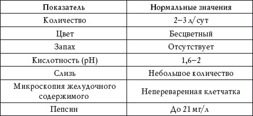
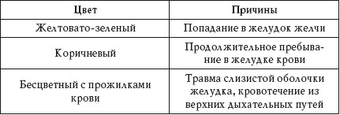
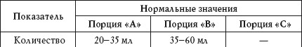
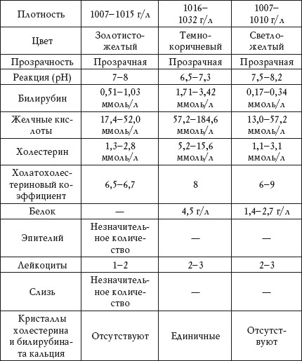

Анализ желудочного сока
Нормальные показатели анализа представлены в таблице 70.
Таблица 70
Анализ желудочного сока. Нормальные показатели

Количество
Повышенный показатель Повышенное выделение желудочного сока наблюдается при:
• язвенной болезни;
• синдроме Золлингера – Эллисона;
• гиперацидном гастрите;
• опухоли желудка;
• спазме желудка;
• остром холецистите;
• аппендиците.
Пониженный показатель Пониженное выделение желудочного сока наблюдается при:
• снижении секреции желудка;
• ускоренной эвакуации пищи;
• воздействии атропина, ганглиоблокаторов, инсулина, диазепама.
Цвет
Причины изменения цвета желудочного сока указаны в таблице 71.
Таблица 71
Причины изменения цвета желудочного сока

Запах
Гнилостный
Гнилостный запах желудочного сока наблюдается при:
• стенозе желудка;
• дефиците соляной кислоты в желудке;
• распаде раковой опухоли;
• гниении белков.
Кислотность
Чтобы определить кислотность желудочного сока, исследуют соляную кислоту (HCl). Ее концентрацию в момент образования обозначают как первичную кислотность. Чтобы исследовать кислотообразующую функцию желудка, определяют общую кислотность, свободную и связанную HCl, а также кислотный остаток.
Суммарная кислотность всех кислых реагентов, находящихся в желудочном соке, называется общей кислотностью.
Свободная HCl находится в желудке в виде диссоциированных ионов хлора и водорода, связанная HCl химически связана с белками.
Повышенная кислотность
Избыточное кислотообразование – гиперхлоргидрия – наблюдается при:
• гиперацидном гастродуодените;
• дуоденальной локализации язвы;
• синдроме Золлингера – Эллисона;
• воздействии гистамина, кофеина, алкоголя, глюкокортикоидов.
Пониженная кислотность
Недостаточное кислотообразование – гипохлоргидрия – наблюдается при:
• язвенной болезни желудка;
• хроническом гипоацидном гастрите;
• синдроме Пламмера – Винсона.
Отсутствие соляной кислоты
Полное отсутствие соляной кислоты – ахлоргидрия – наблюдается при:
• раке желудка;
• диффузном атрофическом гастрите;
• дефиците витамина В12;
• интоксикациях;
• инфекционных болезнях;
• синдроме Вернера – Моррисона.
Отсутствие соляной кислоты и пептина
Полное отсутствие соляной кислоты и пептина – ахилия – наблюдается при:
• раке желудка;
• дефиците витамина В12;
• интоксикациях;
• инфекционных болезнях.
Слизь
Повышенный показатель
Повышенное количество слизи в желудочном соке наблюдается при:
• полипозе желудка;
• раке желудка;
• гастрите;
• язвенной болезни желудка.
Микроскопия
Микроскопическое исследование желудочного содержимого помогает получить точные сведения о состоянии слизистой оболочки желудка. Все элементы микроскопии делятся на элементы слизистой, остатки пищи и микроорганизмы.
Пепсин
Повышенный показатель
Повышенное содержание пепсина в желудочном соке наблюдается при: •гипертиреозе;
• язвенной болезни желудка;
• введении АКТГ.
Пониженный показатель
Пониженное содержание пепсина в желудочном соке наблюдается при:
• гипотиреозе;
• атопическом гастрите;
• интоксикациях;
• инфекционных болезнях;
• болезни Аддисона – Бирмера.
Исследование двенадцатиперстной кишки
При исследовании двенадцатиперстной кишки на анализ берут дуоденальное содержимое, то есть содержимое просвета этой кишки (смесь желчи, желудочного сока, секрета поджелудочной железы и двенадцатиперстной кишки). Материал для анализа извлекается фракционным (пятифазным) зондированием.
I фаза – желчь порции «А» из двенадцатиперстной кишки от момента введения зонда до вливания специального раствора выделяется в течение 20—30 минут.
II фаза – фаза закрытия сфинктера Одди (желчи нет). От введения специального раствора, вызывающего сокращение желчного пузыря, до появления в зонде новой желчи проходит 2—6 минут.
III фаза – желчь из внепеченочных желчных протоков. Это латентный период (3—4 минуты) от начала открытия сфинктера Одди до появления пузырной желчи.
IV фаза – пузырная желчь порции «В» выделяется в течение 20—30 минут.
V фаза – печеночная желчь порции «С», количество которой за 20—30 минут превышает порцию «В».
Нормальные показатели анализа представлены в таблице 72.
Таблица 72
Дуоденальное содержимое. Нормальные показатели


Количество
Повышенный показатель порции «А»
Повышенное количество желчи в порции «А» наблюдается при:
• холедохоэктазии;
• гиперсекреции желчи.
Пониженный показатель порции «А»
Пониженное количество желчи в порции «А» наблюдается при:
• ранней стадии гепатита;
• ранней стадии холецистита.
Если при заборе порции «А» желчь выделяется прерывисто, это может свидетельствовать о дуодените и злокачественных опухолях.
Отсутствие желчи в порции «А»
Отсутствие выделения желчи при заборе порции «А» наблюдается при:
• вирусном гепатите;
• циррозе печени;
• раке печени;
• пилороспазме;
• перекручивании дуоденального зонда.
Пониженный показатель порции «В»
Пониженное количество желчи в порции «В» наблюдается при:
• желчнокаменной болезни;
• холецистите;
• спазме сфинктера желчного пузыря.
Отсутствие желчи в порции «В»
Отсутствие выделения желчи при заборе порции «В» наблюдается при:
• камнях в пузырном протоке;
• новообразованиях в области головки поджелудочной железы;
• сморщивании, сращении или атрофии желчного пузыря.
Отсутствие желчи в порции «С»
Отсутствие выделения желчи при заборе порции «С» наблюдается при:
• камнях в общем желчном протоке;
• новообразованиях в поджелудочной железе;
• отеке головки поджелудочной железы;
• спазме сфинктера.
Если желчь выделяется прерывисто при заборе порции «В», это может свидетельствовать о спазме желчного пузыря, а при заборе порции «С» – о камнях в общем желчном протоке.
Плотность
Повышенный показатель порции «А»
Повышение плотности желчи в порции «А» наблюдается при гемолитической анемии.
Пониженный показатель порции «А»
Понижение плотности желчи в порции «А» наблюдается при:
• вирусном гепатите;
• циррозе печени;
• нарушении поступления желчи в двенадцатиперстную кишку при закупорке ее конкрементом;
• спазме сфинктера Одди;
• опухоли двенадцатиперстной кишки;
• отеке головки поджелудочной железы.
Повышенный показатель порции «В»
Повышение плотности желчи в порции «В» наблюдается при:
• желчнокаменной болезни;
• дискинезии желчевыводящих путей.
Пониженный показатель порции «В»
Понижение плотности желчи в порции «В» наблюдается при снижении концентрационной функции желчного пузыря.
Повышенный показатель порции «С»
Повышение плотности желчи в порции «С» наблюдается при гемолитической желтухе.
Пониженный показатель порции «С»
Понижение плотности желчи в порции «С» наблюдается при:
• гепатите;
• циррозе печени.
Цвет
Порция «А». Темно-желтый
Темно-желтый цвет желчи в порции «А» наблюдается при гемолитической желтухе.
Порция «А». Светло-желтый
Светло-желтый цвет желчи в порции «А» наблюдается при:
• вирусном гепатите;
• циррозе печени;
• закупорке двенадцатиперстной кишки конкрементом;
• спазме сфинктера Одди;
• онкологических заболеваниях;
• отеке головки поджелудочной железы.
Порция «А». Зеленоватый
Зеленоватый цвет желчи в порции «А» наблюдается при инфекционных заболеваниях, приводящих к застою желчи.
Порция «В». Беловатый
Беловатый цвет желчи в порции «В» наблюдается при хроническом холецистите с атрофией слизистой желчного пузыря.
Порция «В». Коричнево-черный
Коричнево-черный цвет желчи в порции «В» наблюдается при инфекционных заболеваниях, приводящих к застою желчи.
Порция «С». Беловатый
Беловатый цвет желчи в порции «С» наблюдается при:
• вирусном гепатите;
• циррозе печени.
Порция «С». Черно-коричневый
Черно-коричневый цвет желчи в порции «С» наблюдается при гемолитической желтухе.
Прозрачность
Порция «А»
Помутнение желчи в порции «А» наблюдается при:
• дуодените;
• повышенной кислотности желудочного сока.
Порция «В»
Помутнение желчи в порции «В» наблюдается при:
• воспалении желчевыводящих путей;
• воспалении желчного пузыря.
Порция «С»
Помутнение желчи в порции «С» наблюдается при:
• воспалении внутрипеченочных ходов;
• холецистохолангите.
Реакция
Пониженный показатель
Снижение pH желчи в различных порциях наблюдается при воспалительных заболеваниях желчевыводящих путей.
Билирубин
Повышенный показатель
Повышение количества билирубина в различных порциях желчи наблюдается при:
• гемолитической желтухе;
• малярии;
• анемии Аддисона – Бирмера;
• переливании несовместимой крови.
Пониженный показатель
Понижение количества билирубина в различных порциях желчи наблюдается при:
• вирусном гепатите;
• циррозе печени;
• спазме сфинктера Одди;
• онкологических болезнях;
• отеке головки поджелудочной железы;
• алиментарной дистрофии;
• негемолитической врожденной желтухе I типа.
Анализ желчи позволяет выявить некоторых паразитов: лямблий, гельминтов, аскарид.
Желчные кислоты
Повышенный показатель
Повышение количества желчных кислот в порции «С» наблюдается в начальной стадии калькулезного холецистита.
Пониженный показатель
Понижение количества желчных кислот в различных порциях наблюдается при:
• калькулезном холецистите;
• панкреатите;
• вирусном гепатите.
Холестерин
Повышенный показатель
Повышение количества холестерина в различных порциях желчи наблюдается при:
• холецистите;
• желчнокаменной болезни;
• панкреатите;
• сахарном диабете;
• гемолитической желтухе.
Пониженный показатель
Понижение количества холестерина в различных порциях желчи наблюдается при:
• хронических болезнях печени;
• циррозе печени;
• вирусном гепатите;
• остром холецистите;
• снижении концентрационной функции желчного пузыря;
• анемии;
• алиментарной дистрофии.
Холатохолестериновый коэффициент
Холатохолестериновый коэффициент – это соотношение желчных кислот и холестерина.
Пониженный показатель
Понижение холатохолестеринового коэффициента наблюдается при:
• обычном течении вирусного гепатита (незначительное понижение);
Если в желчи уменьшена концентрация желчных кислот и повышен холестерин, это может свидетельствовать о предрасположенности к желчнокаменной болезни.
• затяжном течении вирусного гепатита (умеренное понижение);
• остром холецистите (значительное понижение);
• хроническом панкреатите (значительное понижение).
Белок
Повышенный показатель
Повышение количества белка в желчи наблюдается при:
• воспалении желчевыводящих путей;
• отравлении алкоголем, фосфором или мышьяком.
Эпителий
Повышенный показатель
Наличие в желчи эпителиальных клеток наблюдается при:
• воспалениии желчного пузыря;
• холангите.
Лейкоциты
Повышенный показатель
Повышение количества лейкоцитов в желчи наблюдается при:
• дуодените;
• холецистите;
• холангите.
Слизь
Повышенный показатель
Наличие в желчи большого количества слизи наблюдается при:
• дуодените;
• воспалении желчевыводящих путей.
Кристаллы холестерина и билирубината кальция
Повышенный показатель
Наличие в желчи кристаллов холестерина и билирубината кальция наблюдается при:
• желчнокаменной болезни;
• изменении коллоидной стабильности желчи.